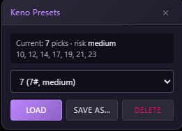
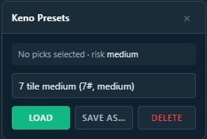

Keno Presets
Save your Keno tile + risk combos once, load them back in one click — on Stake or Nuts.
Tired of clicking 10 tiles and re-picking your risk every single round? Pick your numbers, set your difficulty, hit Save As… and give the preset a name.
Next time you want that exact board, select the preset from the dropdown and hit Load — tiles and risk snap into place automatically. The panel shows your current picks live, so you know exactly what's on the board before you hit Play.
Presets are stored in localStorage and shared between Stake and Nuts. Save a preset on Stake, load it on Nuts, or vice-versa — same names, same setups, both sites. Works on Stake.com, Stake.us (and all mirrors), and Nuts.gg.
Delete a preset from the same dropdown when you're done with it. The compact panel is out-of-the-way and stays out of your face while you play.
Screenshots


Install
Keno Presets is available on Desktop (inside the unified bundle) and on Mobile (as individual Stake / Nuts scripts).